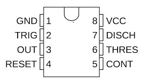
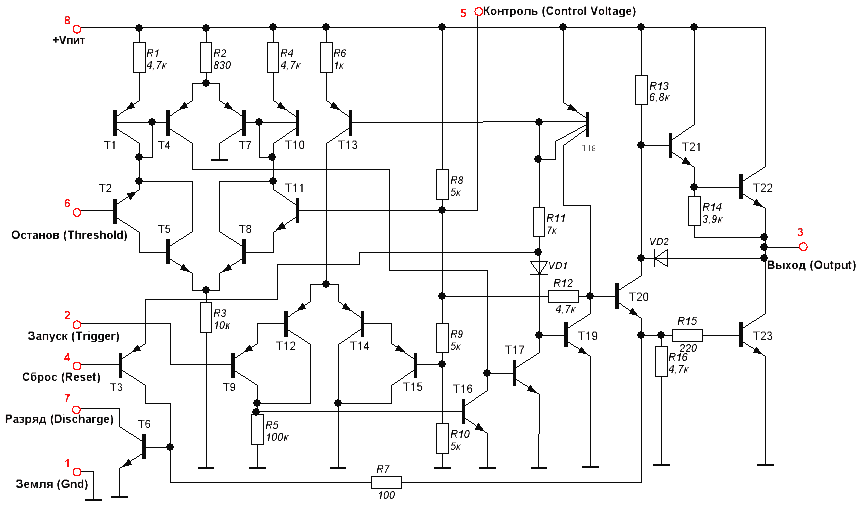
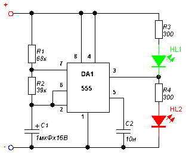
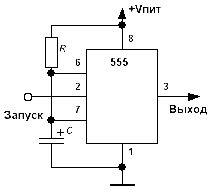
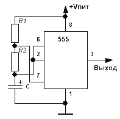
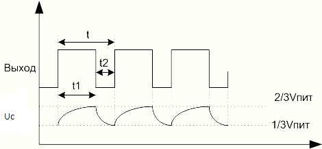
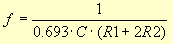

|
Производитель |
Название микросхемы |
|
ECG Philips |
ECG955M |
|
Exar |
XR-555 |
|
Fairchild |
NE555 |
|
Harris |
HA555 |
|
Intersil |
SE555/NE555 |
|
Lithic Systems |
LC555 |
|
Maxim |
ICM7555 |
|
Motorola |
MC1455/MC1555 |
|
National |
LM1455/LM555C |
|
NTE Silvania |
NTE955M |
|
Raytheon |
RM555/RC555 |
|
RCA |
CA555/CA555C |
|
Sanyo |
LC7555 |
|
Texas Instruments |
SN52555/SN72555 |

1 - Земля;
2 - Запуск;
3 - Выход;
4 - Сброс;
5 - Контроль;
6 - Останов;
7 - Разряд;
8 - Питание;
Помимо стандартных, выпускается еще две разновидности микросхем - 556 и 558. 556 - это сдвоенная версия таймера, 558 - счетверенная.
Выходной ток может достигать 200 мА, потребляемый - на 3- 6 мА больше. Напряжение питания может изменяться от 4,5 до 18 вольт. При этом точность таймера практически не зависит от изменения напряжения питания и составляет 1% от расчетного. Дрейф составляет 0,1%/вольт, а температурный дрейф - 0,005%/С.

1. Земля.
2. Запуск. Вход компаратора №2. При подаче на этот вход импульса низкого уровня (не более 1/3 Vпит) таймер запускается и на выходе устанавливается напряжение высокого уровня на время, которое определяется внешним сопротивлением R (Ra+Rb, см. функциональную схему) и конденсатором С - это так называемый режим моностабильного мультивибратора. Входной импульс может быть как прямоугольным, так и синусоидальным. Главное, чтобы по длительности он был короче, чем время заряда конденсатора С. Если же входной импульс по длительности все-таки превысит это время, то выход микросхемы будет оставаться в состоянии высокого уровня до тех пор, пока на входе не установится опять высокий уровень. Ток, потребляемый входом, не превышает 500нА.
3. Выход. Выходное напряжение меняется вместе с напряжением питания и равно Vпит-1,7В (высокий уровень на выходе). При низком уровне выходное напряжение равно примерно 0,25в (при напряжении питания +5в). Переключение между состояниями низкий - высокий уровень происходит приблизительно за 100 нс.
4. Сброс. При подаче на этот вывод напряжения низкого уровня (не более 0,7в) происходит сброс выхода в состояние низкого уровня не зависимо от того, в каком режиме находится таймер на данный момент и чем он занимается. Входное напряжение не зависит от величины напряжения питания - это TTL-совместимый вход. Для предотвращения случайных сбросов этот вывод настоятельно рекомендуется подключить к плюсу питания, пока в нем нет необходимости.
5. Контроль. Этот вывод позволяет получить доступ к опорному напряжению компаратора №1, которое равно 2/3Vпит. Обычно, этот вывод не используется. Однако его использование может весьма существенно расширить возможности управления таймером. Все дело в том, что подачей напряжения на этот вывод можно управлять длительностью выходных импульсов таймера и таким образом, забить на RC времязадающую цепочку. Подаваемое напряжение на этот вход в режиме моностабильного мультивибратора может составлять от 45% до 90% напряжения питания. А в режиме мультивибратора от 1,7в до напряжения питания. При этом мы получаем ЧМ (FM) модулированный сигнал на выходе. Если же этот вывод таки не используется, то его рекомендуется подключить к общему проводу через конденсатор 0,01мкФ (10нФ) для уменьшения уровня помех и всяких других неприятностей.
6. Останов. Этот вывод является одним из входов компаратора №1. Он используется как эдакий антипод вывода 2. То есть используется для остановки таймера и приведения выхода в состояние низкого уровня. При подаче импульса высокого уровня (не менее 2/3 напряжения питания), таймер останавливается, и выход сбрасывается в состояние низкого уровня. Так же как и на вывод 2, на этот вывод можно подавать как прямоугольные импульсы, так и синусоидальные.
7. Разряд. Этот вывод подсоединен к коллектору транзистора Т6, эмиттер которого соединен с землей. Таким образом, при открытом транзисторе конденсатор С разряжается через переход коллектор-эмиттер и остается в разряженном состоянии пока не закроется транзистор. Транзистор открыт, когда на выходе микросхемы низкий уровень и закрыт, когда выход активен, то есть на нем высокий уровень. Этот вывод может также применяться как вспомогательный выход. Нагрузочная способность его примерно такая же, как и у обычного выхода таймера.
8. Плюс питания. Напряжение питания таймера может находиться в пределах 4,5-16 вольт. У военных версий микросхемы верхний диапазон находится на уровне 18 вольт.
Большинство таймеров нуждаются во времязадающей цепочке, обычно состоящей из резистора и конденсатора. Таймер 555 не исключение.
Как же нам определить время, на которое будет включаться таймер и номиналы RC цепочки, необходимые для задания этого времени? Время, за которое конденсатор заряжается до 63,2% (2/3) напряжения питания называется временной константой, обозначим её буковкой t. Вычисляется это время потрясающей по своей сложности формулой. Вот она: t = R*C, где R - сопротивление резистора в МегаОм-ах, С - емкость конденсатора в микроФарад-ах. Время получается в секундах.
Простая схема-тестер для таймера:

Если после включения питания мигают оба светодиода - значит все хорошо и микросхема во вполне рабочем состоянии. Если же хотя бы один из диодов не горит или наоборот - горит постоянно, значит такую микросхемы можно выкинуть. Напряжение питания - 9 вольт.
РЕЖИМЫ РАБОТЫ
Моностабильный мультивибратор
Моностабильный - потому что стабильное состояние у такого мультивибратора одно - выключен. А во включенное состояние мы его переводим временно, подав на вход таймера какой-либо сигнал. Как уже отмечалось выше, время, на которое мультивибратор переходит в активное состояние, определяется RC цепочкой. Эти свойства могут быть использованы в самых разнообразных схемах. Для запуска чего-либо на определенное время или наоборот - для формирования паузы на заданное время.
Схема включения:

RC цепочка включена между плюсом и минусом питания. К соединению резистора и конденсатора подключен вывод 6 - Останов. Это вход компаратора №1. Сюда же подключен вывод 7 - Разряд. Входной импульс подается на вывод 2 - Запуск. Это вход компаратора №2. Совершенно простецкая схема - один резистор и один конденсатор - куда уж проще? Для повышения помехоустойчивости можно подключить вывод 5 на общий провод через конденсатор емкостью 10нФ.
Итак, в исходном состоянии, на выходе таймера низкий уровень - около нуля вольт, конденсатор разряжен и заряжаться не хочет, поскольку открыт транзистор Т6. Это состояние стабильное, оно может продолжаться неопределенно долгое время. При поступлении на вход импульса низкого уровня, срабатывает компаратор №2 и переключает внутренний триггер таймера. В результате на выходе устанавливается высокий уровень напряжения. Транзистор Т6 закрывается и начинает заряжаться конденсатор С через резистор R. Все то время, пока он заряжается, на выходе таймера сохраняется высокий уровень. Таймер не реагирует ни на какие внешние раздражители, будто они поступают на вывод 2. То есть, после срабатывания таймера от первого импульса дальнейшие импульсы не оказывают никакого действия на состояние таймера - это очень важно. Заряжается конденсатор. Когда он зарядится до напряжения 2/3Vпит, сработает компаратор №1 и в свою очередь переключит внутренний триггер. В результате на выходе установится низкий уровень напряжения, и схема вернется в свое исходное, стабильное состояние. Транзистор Т6 откроется и разрядит конденсатор С.
Время, на которое таймер, так сказать "выходит из себя", может быть от одной миллисекунды до сотен секунд.
Считается оно так: T=1.1*R*C
Теоретически, пределов по длительности импульсов нет - как по минимальной длительности, так и по максимальной. Однако, есть некоторые практические ограничения, которые обойти можно, но сначала стоит задуматься - нужно ли это делать и не проще ли выбрать другое схемное решение.
Так, минимальные значения, установленные практическим образом для R составляет 10кОм, а для С - 95пФ. Можно ли меньше? В принципе - да. Но при этом, если еще уменьшить сопротивление резистора - схема начнет трескать слишком много электричества. Если уменьшить емкость С, то всякие паразитные емкости и помехи могут существенно повлиять на работу схемы.
С другой стороны, максимальное значение резистора примерно равно 15Мом. Здесь ограничение накладывает ток, потребляемый входом Останов (около 120нА) и ток утечки конденсатора С. Таким образом, при слишком большом значении резистора таймер просто никогда не выключится, если сумма токов утечки конденсатора и тока входа превысит 120 нА.
Ну а что касается максимальной емкости конденсатора, то дело не столько в самой емкости, сколько в токе утечки. Понятно, что чем больше емкость, тем больше ток утечки и тем хуже будет точность таймера. Поэтому, если таймер будет использоваться для больших временных интервалов, то лучше пользоваться конденсаторами с малыми токами утечки - например, танталовыми.
Генератор импульсов
Микросхема может выдавать последовательность прямоугольных импульсов, параметры которых определяются все той же RC цепочкой.
Схема:

В эту схему добавлен еще один резистор. Входы обоих компараторов соединены и подключены к соединению резистора R2 и конденсатора. Вывод 7 включен между резисторами. Конденсатор заряжается через резисторы R1 и R2.
Теперь посмотрим, что же произойдет, когда мы подадим питание на схему. В исходном состоянии конденсатор разряжен и на входах обоих компараторов низкий уровень напряжения, близкий к нулю. Компаратор №2 переключает внутренний триггер и устанавливает на выходе таймера высокий уровень. Транзистор Т6 закрывается и конденсатор начинает заряжаться через резисторы R1 и R2.

Когда напряжение на конденсаторе достигает 2/3 напряжения питания, компаратор №1 в свою очередь переключает триггер и выключает выход таймер - напряжение на выходе становится близким к нулю. Транзистор Т6 открывается и конденсатор начинает разряжаться через резистор R2. Как только напряжение на конденсаторе опустится до 1/3 напряжения питания, компаратор №2 опять переключит триггер и на выходе микросхемы снова появится высокий уровень. Транзистор Т6 закроется и конденсатор снова начнет заряжаться... фууу, чет у меня голова закружилась уже.
Короче говоря, в результате всего этого шаманства, на выходе мы получаем последовательность прямоугольных импульсов. Частота импульсов, как вы вероятно уже догадались, зависит от величин C, R1 и R2. Определяется она по формуле:

Значения R1 и R2 подставляются в Омах, C - в фарадах, частота получается в Герцах.
Время между началом каждого следующего импульса называется периодом и обозначается буковкой t. Оно складывается из длительности самого импульса - t1 и промежутком между импульсами - t2. t = t1+t2.
Частота и период - понятия обратные друг другу и зависимость между ними следующая:
f = 1/t.
t1 и t2 разумеется тоже можно и нужно посчитать. Вот так:
t1 = 0.693(R1+R2)C;
t2 = 0.693R2C;